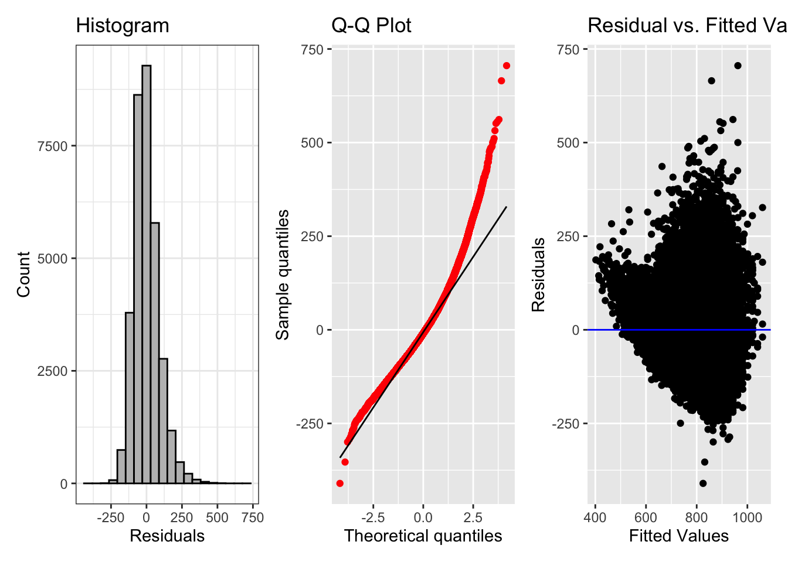
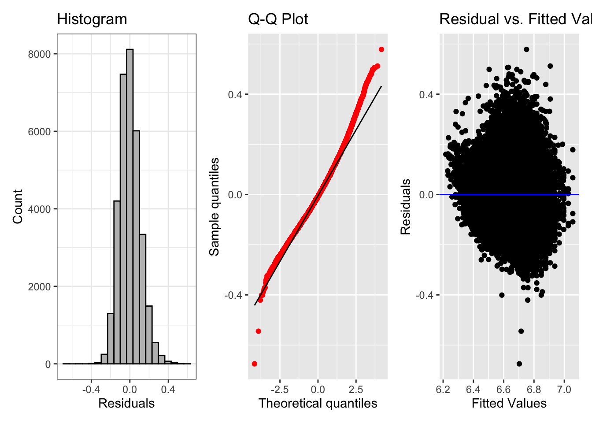

# suppress scientific notation
options(scipen=999)4 Multiple Regression
Regression for Linguists
Summary
- we saw that the equation for a straight line boils down to its intercept and slope
- we fit our first linear model with a continuous predictor
Learning Objectives
Today we will learn…
- what multiple regression is
- how to include multiple predictor variables
- how to interpret slopes in multiple regression
- how to interpret interaction effects
- about the assumption of the absence of collinearity
Set-up environment
We’ll also need to load in our required packages. Hopefully you’ve already install the required packages (if not, go to Chapter 3).
# load libraries
pacman::p_load(
tidyverse,
here,
broom,
janitor,
languageR)Load data
We’ll use the full dataset of the frequency data.
df_freq_full <-
read_csv(here("data", "ELP_full_length_frequency.csv")) |>
clean_names() |>
mutate(freq = 10^(log10freq), # inverse log10
freq_log = log(freq)) |> # use natural logarithm
relocate(word, rt, length, freq, freq_log)We have 4 variables:
wordlengthrtfreqfreq_loglog10freq
4.1 Multiple regression
So far we’ve worked with simple linear models, which fit a model to a predictor and response variable. These models do not differ so greatly from a one- or two-sample t-test (for a categorical predictor) or Pearson’s r (for a standardised continuous predictor). You might be wondering then we would bother with linear regression. One reason is that it allows us to include multiple predictors in our models, which still boils down to modeling the mean, but while condintioning the mean on multiple variables at once.
Recall the equation of a line (\(\ref{eq-simple-lin-2}\)), which states that any value of \(y\) equals the intercept (\(b_0\)) plus the corresponding value of \(x\) multiplied by the slope (\(b_1x\)), plus the error, which are our residuals (\(e\)). In multiple regression, we can include more than one slope (\(\ref{eq-multiple-reg}\)).
\[\begin{align} y &= b_0 + b_1x + e \label{eq-simple-lin-2} \\ y &= b_0 + b_1x + b_2x + ... + e \label{eq-multiple-reg} \end{align}\]
flowchart LR
A[Continuous variable]
A --> F[Zero-truncated with positive skew \n e.g., reaction times]
A --> H[Interval i.e., lower and upperbound \n e.g., rating scale]
H --> I[Centre on median value]
I --> E(Response)
E --> Z[Done]
F --> G[Non-linear transformation \n e.g., log-transform]
G --> B(Predictor)
I --> B(Predictor)
B --> C{One predictor}
C --> X[Centre]
D --> Y[Centre and standardise]
B --> D{Two predictor}
G --> E(Response)
4.1.1 One predictor
Let’s re-run our simple model with this dataset. Let’s keep reaction times in the raw milliseconds for now for interpretability.
fit_freq_full <-
lm(rt ~ log(freq), data = df_freq_full)tidy(fit_freq_full)# A tibble: 2 × 5
term estimate std.error statistic p.value
<chr> <dbl> <dbl> <dbl> <dbl>
1 (Intercept) 907. 1.09 828. 0
2 log(freq) -37.5 0.262 -143. 0We see there is a decrease in reaction times (-37.5 milliseconds) for a 1-unit increase in log frequency. Let’s look at the model fit using glance().
glance(fit_freq_full)$r.squared[1] 0.3834186We see that the R-squared is 0.383, meaning our model describes 38% of the variance in response times. We can’t be sure that this described variance is due solely to frequency, however. Our models only know what we tell them! Other effects that are correlated with frequency might be conflating the frequency effect, e.g., more frequent words tend to be shorter (zipf_1949?). Let’s expand our model to include word length [\(\ref{eq-freq-length}\)].
\[\begin{equation} y = b_0 + b_1*log frequency + b_2*word length \label{eq-freq-length} \end{equation}\]
4.1.2 Adding a predictor
Let’s add length as a predictor to our model.
fit_freq_mult <-
lm(rt ~ log(freq) + length, data = df_freq_full)tidy(fit_freq_mult) |> select(term, estimate)# A tibble: 3 × 2
term estimate
<chr> <dbl>
1 (Intercept) 748.
2 log(freq) -29.5
3 length 19.5We see that length is also a significant predictor of reaction times, with an increase in word length (+1 letter) corresponds to a 20ms increase in reaction times. Our intercept is also now 748ms, instead of 907ms. The 907ms intercept corresponds to the prediction for reaction times to a word with 0 log frequency and 0 word length, but this is not very interpretable. If we were to center both prdictors, the intercept would be the reaction time for a wrd with average frequency and average length.
The slope for log frequency has also changed: from -37.5 to -29.5. This change tells us that some of the effect in our first model was confounded with length, as controlling for length weakens the effect of frequency.
glance(fit_freq_mult)$r.squared[1] 0.4872977We also see that including length increases the variance described by our model, reflected in the R-squared values (0.4872977 instead of 0.3834186.
4.2 Standardising our predictors
Recall that, when we have multiple continuous predictors, standardising them can help their interpretation, as their slopes are comparable. We could achieve this by centering each variable and then dividing by the standard deviation, or we could use the scale() function, which does just this.
# centre and then standardize
df_freq_full |>
mutate(
freq_z1 = (freq-mean(freq))/sd(freq),
freq_z2 = scale(freq)) |>
select(freq_z1, freq_z2) |>
head()# A tibble: 6 × 2
freq_z1 freq_z2[,1]
<dbl> <dbl>
1 -0.0902 -0.0902
2 -0.0864 -0.0864
3 -0.0905 -0.0905
4 -0.0864 -0.0864
5 -0.0885 -0.0885
6 -0.0901 -0.0901Let’s use scale() for freq and length.
df_freq_full <-
df_freq_full |>
mutate(freq_z = scale(freq_log),
length_z = scale(length))fit_freq_z <-
lm(rt ~ freq_z + length_z, data = df_freq_full)First, let’s check the \(R^2\):
glance(fit_freq_z)$r.squared[1] 0.4872977We see that our \(R^2\) value is 0.4872977, just like above. This serves as a reminder that the predictors still represent the same variance in the underlying model, their units and scales have simply changed. What about our coefficients:
tidy(fit_freq_z) |> select(term, estimate)# A tibble: 3 × 2
term estimate
<chr> <dbl>
1 (Intercept) 770.
2 freq_z -60.6
3 length_z 43.3Here, a 1-unit change always corresponds to a change of 1 standard deviation. Now we see that frequency has a larger magnitude than the effect of length. So, for each instease in frequency by 1 standard deviation (holiding length constant), reaction times decrease by 29.5 ms.
4.2.1 Adding an interaction term
We won’t spent much time talking about interactions, but please check out Ch. 8 (Interations and nonlinear effects) in Winter (2019) for a more in-depth treatment. For now, what’s important to know is that interactions describe how effects of one predictor may be influenced by changes in another predictor. We can add interactin terms of two predictors by connecting them with a colon (:).
lm(rt ~ freq_z + length_z + freq_z:length_z,
data = df_freq_full) |>
tidy() |> select(term, estimate)# A tibble: 4 × 2
term estimate
<chr> <dbl>
1 (Intercept) 766.
2 freq_z -63.9
3 length_z 41.8
4 freq_z:length_z -11.4Or, we can simply connect the two predictors with an asterisk (*) to indicate that we want to look at both predictors and their interaction.
lm(rt ~ freq_z*length_z,
data = df_freq_full) |>
tidy() |> select(term, estimate)# A tibble: 4 × 2
term estimate
<chr> <dbl>
1 (Intercept) 766.
2 freq_z -63.9
3 length_z 41.8
4 freq_z:length_z -11.4The model estimates are the same for both models. The intercept is the predicted reaction time for a word with the mean length and mean frequency. Notice that the interaction slope is negative, meaning when both freq and length increase, reaction times will decrease.
4.3 Model assumptions
We’ve already discussed the assumptions of normality and homoscedasticity (constant variance), which both refer to the residuals of a model. We typically assess these assumptions visually, with histogram and Q-Q plots.
4.3.1 Normality and Homoscedasticity
For our model
fig_hist <-
fit_freq_z |>
ggplot() +
aes(x = .resid) +
geom_histogram(bins = 20, fill = "grey", colour = "black") +
theme_bw() +
labs(title='Histogram', x='Residuals', y='Count')
fig_qq <-
fit_freq_z |>
ggplot() +
aes(sample = .resid) +
geom_qq(colour = "red") +
geom_qq_line() +
labs(title='Q-Q Plot', x='Theoretical quantiles', y='Sample quantiles')
fig_res <-
fit_freq_z |>
ggplot() +
aes(x = .fitted, y = .resid) +
geom_point() +
geom_hline(yintercept = 0, colour = "blue") +
labs(title='Residual vs. Fitted Values Plot', x='Fitted Values', y='Residuals')
fig_hist + fig_qq + fig_res
The histogram looks approximately normally distributed, with a bit of a positive skew. The Q-Q plot suggests a less-normal distribution, with the model estimates fitting larger reaction times more poorly. The residual plot also shows that the variance of the residuals is not constant, with much larger residual variance for larger fitted values. This tells us we should probably log reaction times. Let’s try it all again, with log-transformed reaction times.
4.3.2 Log-transformed response variable
fit_freq_log_z <-
lm(log(rt) ~ freq_z*length_z,
data = df_freq_full)glance(fit_freq_log_z)$r.squared[1] 0.5176913tidy(fit_freq_log_z) |> select(term, estimate)# A tibble: 4 × 2
term estimate
<chr> <dbl>
1 (Intercept) 6.63
2 freq_z -0.0826
3 length_z 0.0524
4 freq_z:length_z -0.00779We see now that our values are much smaller, because they’re on the log-scale.
exp(6.63 + -0.0826*5 + 0.0524*2)[1] 556.5739exp(6.63 + -0.0826*4 + 0.0524*2)[1] 604.499exp(6.63 + -0.0826*1 + 0.0524*6)[1] 955.0847tidy(fit_freq_log_z)# A tibble: 4 × 5
term estimate std.error statistic p.value
<chr> <dbl> <dbl> <dbl> <dbl>
1 (Intercept) 6.63 0.000636 10428. 0
2 freq_z -0.0826 0.000666 -124. 0
3 length_z 0.0524 0.000649 80.7 0
4 freq_z:length_z -0.00779 0.000581 -13.4 8.51e-41fig_hist <-
fit_freq_log_z |>
ggplot() +
aes(x = .resid) +
geom_histogram(bins = 20, fill = "grey", colour = "black") +
theme_bw() +
labs(title='Histogram', x='Residuals', y='Count')
fig_qq <-
fit_freq_log_z |>
ggplot() +
aes(sample = .resid) +
geom_qq(colour = "red") +
geom_qq_line() +
labs(title='Q-Q Plot', x='Theoretical quantiles', y='Sample quantiles')
fig_res <-
fit_freq_log_z |>
ggplot() +
aes(x = .fitted, y = .resid) +
geom_point() +
geom_hline(yintercept = 0, colour = "blue") +
labs(title='Residual vs. Fitted Values Plot', x='Fitted Values', y='Residuals')
fig_hist + fig_qq + fig_res
Looks much better.
4.3.3 Collinearity
Collinearity refers to when continuous predictor variables are correlated, which can make the interpretation of their coefficients difficult, and the results spurious. Regression assumes there is an absence of collinearity, i.e., our predictor variables are not correlatded.
To assess collinearity, you can use the vif() function from the car package to compare variance inflation factors. VIF values close to 1 indicates there is not a high degree of collinearity between your variables.
car::vif(fit_freq_log_z) freq_z length_z freq_z:length_z
1.246509 1.184641 1.068283 Collinearity is a conceptual problem, and is something that you need to consider in the planning stage. Typically, we want to include predictors that we have specific predictions or research questions about. Shoving a bunch of predictors in a model to see what comes out significant is bad practice. Rather, we should have a principled approach to model building and variable selection. This is not to say that exploratory analyses should be avoided, but that this comes with caveats.
4.3.4 Adjusted \(R^2\)
Although we should avoid throwing any old predictor into our model, adjusted \(R^2\) is a more conservative version of \(R^2\) that takes into account the number of predictors in a model. For each additional predictor, adjusted \(R^2\) includes the number of predictors (\(k\)) in its denominator (bottom half of a division), which means that the more predictors there are, the smaller \(R^2\) will be, unless each additional predictor explains sufficient variance to counteract this penalisation.
glance(fit_freq_log_z)$adj.r.squared[1] 0.5176475If we were to look at the (adjusted) \(R^2\) of our simple linear regression model, where log reaction times are predicted by standardised log frequency, we see that there is a large increase in our model which includes length and its interaction. This suggests that our model is not overfit, and that length contributes to the variance explained by the model.
glance(lm(log(rt) ~ freq_z, data = df_freq_full))$adj.r.squared[1] 0.4148675If we likewise compare to the same model without an interaction term (log reaction times ~ frequency * length), we see that the adjusted \(R^2\) is not very different. If the adjusted \(R^2\) were much lower, this would indicate that including the interaction term leads to overfitting.
glance(lm(log(rt) ~ freq_z + length_z, data = df_freq_full))$adj.r.squared[1] 0.5150461Important terms
| Term | Definition | Equation/Code |
|---|---|---|
| Collinearity | Correlation between two predictors (linear model assumes non-collinearity) | car::vif(model) |
Learning Objectives 🏁
Today we learned…
- what multiple regression is
- how to include multiple predictor variables
- how to interpret slopes in multiple regression
- how to interpret interaction effects
- about the assumption of the absence of collinearity
4.4 Task
Load in the english dataset from the languageR package (Baayen & Shafaei-Bajestan, 2019) (code below). You don’t need to load in any CSV file, because this dataset is available if you have the package loaded. From the manual:
This data set gives mean visual lexical decision latencies and word naming latencies to 2284 monomorphemic English nouns and verbs, averaged for old and young subjects, with various predictor variables.
# load in 'english' dataset from languageR
df_freq_eng <-
as.data.frame(english) |>
dplyr::select(RTlexdec, RTnaming, Word, LengthInLetters, AgeSubject, WrittenFrequency) |>
rename(rt_lexdec = RTlexdec,
rt_naming = RTnaming,
freq_written = WrittenFrequency) |>
clean_names() |>
relocate(word)We’re keeping five variables:
word: a factor with 2284 wordsrt_lexdec: numeric vector of log RT in visual lexical decisionrt_naming: numeric vector of log RT in word naminglength_in_letters: numeric vector with length of the word in lettersAgeSubject: a factor with as levels the age group of the subject: young versus old.freq_written: numeric vector with log frequency in the CELEX lexical database
Take the following steps:
Perform an exploratory data analysis to understand the data (produce plots, tables, whatever you think necessary and can do).
Model the data, with back-transformed (raw) reaction times as a response variable and written frequency and length in letters as predictors. Perform any tranformations you think necessary. Run model diagnostic checks and assess model fit.
- Re-run the model with log reaction times as a response variable and written frequency and length in letters as predictors. Perform any tranformations you think necessary. Run model diagnostic checks and assess model fit.
- Remove length in letters as a predictor. How is model fit affected? What can you conclude?
Session Info
Developed with Quarto using R version 4.4.0 (2024-04-24) (Puppy Cup) and RStudio version 2023.9.0.463 (Desert Sunflower), and the following packages:
sessionInfo()R version 4.4.0 (2024-04-24)
Platform: aarch64-apple-darwin20
Running under: macOS Ventura 13.2.1
Matrix products: default
BLAS: /Library/Frameworks/R.framework/Versions/4.4-arm64/Resources/lib/libRblas.0.dylib
LAPACK: /Library/Frameworks/R.framework/Versions/4.4-arm64/Resources/lib/libRlapack.dylib; LAPACK version 3.12.0
locale:
[1] en_US.UTF-8/en_US.UTF-8/en_US.UTF-8/C/en_US.UTF-8/en_US.UTF-8
time zone: Europe/Berlin
tzcode source: internal
attached base packages:
[1] stats graphics grDevices datasets utils methods base
other attached packages:
[1] googlesheets4_1.1.1 gt_0.10.1 kableExtra_1.4.0
[4] knitr_1.43 patchwork_1.2.0 languageR_1.5.0
[7] janitor_2.2.0 broom_1.0.5 here_1.0.1
[10] lubridate_1.9.3 forcats_1.0.0 stringr_1.5.1
[13] dplyr_1.1.4 purrr_1.0.2 readr_2.1.5
[16] tidyr_1.3.1 tibble_3.2.1 ggplot2_3.5.1
[19] tidyverse_2.0.0
loaded via a namespace (and not attached):
[1] gtable_0.3.5 xfun_0.40 htmlwidgets_1.6.4 gargle_1.5.2
[5] tzdb_0.4.0 vctrs_0.6.5 tools_4.4.0 generics_0.1.3
[9] curl_5.2.1 parallel_4.4.0 fansi_1.0.6 pacman_0.5.1
[13] pkgconfig_2.0.3 lifecycle_1.0.4 farver_2.1.1 compiler_4.4.0
[17] munsell_0.5.1 carData_3.0-5 snakecase_0.11.1 sass_0.4.7
[21] htmltools_0.5.8.1 yaml_2.3.7 car_3.1-2 crayon_1.5.2
[25] pillar_1.9.0 abind_1.4-5 tidyselect_1.2.1 digest_0.6.33
[29] stringi_1.8.3 labeling_0.4.3 rprojroot_2.0.4 fastmap_1.1.1
[33] grid_4.4.0 colorspace_2.1-0 cli_3.6.2 magrittr_2.0.3
[37] utf8_1.2.4 withr_3.0.0 scales_1.3.0 backports_1.4.1
[41] bit64_4.0.5 googledrive_2.1.1 timechange_0.3.0 httr_1.4.7
[45] rmarkdown_2.24 bit_4.0.5 cellranger_1.1.0 hms_1.1.3
[49] evaluate_0.21 viridisLite_0.4.2 rlang_1.1.3 glue_1.7.0
[53] xml2_1.3.6 renv_1.0.7 svglite_2.1.3 rstudioapi_0.16.0
[57] vroom_1.6.5 jsonlite_1.8.7 R6_2.5.1 systemfonts_1.0.6
[61] fs_1.6.3